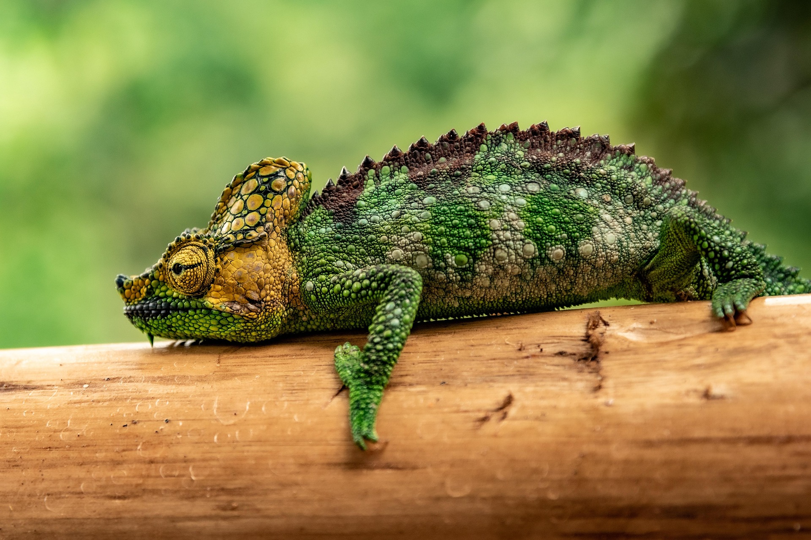

El camaleón es un reptil muy conocido por su capacidad para cambiar de color. Existen más de 150 especies diferentes y la mayoría vive en África y en la isla de Madagascar. También se pueden encontrar algunas especies en Asia y Europa. Estos animales pertenecen a la familia Chamaeleonidae y son famosos por su habilidad para camuflarse en su entorno.
Su hábitat natural son los bosques tropicales, selvas y zonas con abundante vegetación. Prefieren lugares con árboles y plantas donde puedan esconderse de los depredadores y encontrar alimento con facilidad.
El estilo de vida del camaleón es principalmente arbóreo, lo que significa que pasa la mayor parte del tiempo en los árboles. Se alimenta de insectos como grillos, moscas y saltamontes. Para capturar a sus presas utiliza su larga lengua pegajosa, la cual puede extenderse rápidamente para atrapar insectos en cuestión de milisegundos.
Otra característica interesante de los camaleones es que pueden mover sus ojos de forma independiente, lo que les permite observar dos direcciones diferentes al mismo tiempo y detectar presas o depredadores con facilidad.
Características
Clasificación científica